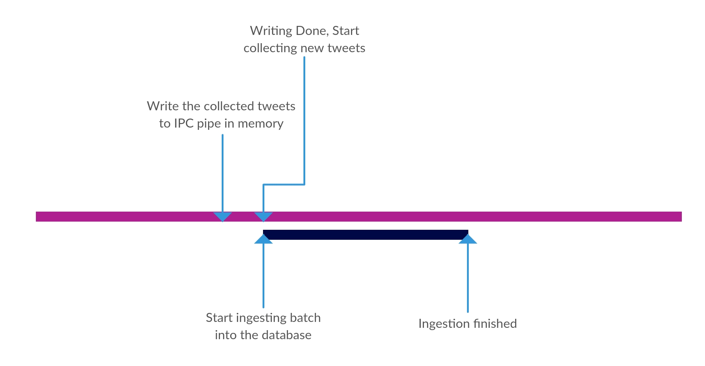
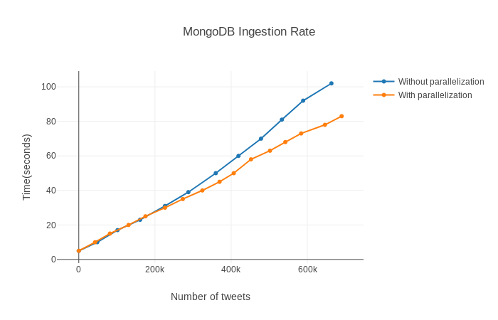

Ingesting data into MongoDB¶
Why store in MongoDB¶
In mongoDB we store only the data which can be extracted quickly from incoming tweets without much processing. We answer “non-network” based i.e. simple aggregate queries using MongoDB instead of Neo4j.
This means that any query which can be answered using mongoDB can also be answered using the network data in neo4j. This has been done to ensure that some very common queries can be answered quickly. Also, neo4j has a limit on the parallel sessions that can be made to the database, so in case we decide to do away with mongoDB, those queries would have to be answered from neo4j and would unnecessarily take up the sessions.
Data Format in mongoDB¶
We have three collections in mongoDB:
- To store the hashtags. Each document in this collection stores the following information:
- the hashtag
- the timestamp of the tweet which contained the hashtag
- the sentiment associated with the tweet containing the hashtag
- To store urls
- the url
- the timestamp of the tweet which contained the hashtag
- the sentiment associated with the tweet containing the hashtag
- To store user mentions
- the user mention
- the timestamp of the tweet which contained the hashtag
- the sentiment associated with the tweet containing the hashtag
Given this information in mongoDB, we can currently use it to answer queries like:
- Most popular hashtags(and their sentiment) in total
- Most popular hashtags(and their sentiment) in an interval of time
- Most popular urls in total
- Most popular urls in an interval of time
- Most popular users in total(in terms of their mentions)
- Most popular users in an interval of time(in terms of their mentions)
mongoDB v/s neo4j¶
Note that just the bare minimum information that is currently being stored in the mongoDB. It can easily be extended to store more information. MongoDB provides strong mechanisms to aggregate and extract information from the database.
So, even if we decide to store some pseudo-structural information, like the user of the tweet in hashtags collection and then answer queries like the sentiment associated will all the tweets of an user, we expect the query execution time to be atleast as fast as answering the query in neo4j, though in case of neo4j also, answering such query would also take only a single hop, which means that the execution time would be small anyways. This is precisely the reason why we don’t currently store such information in mongoDB.
But, as the size of the system grows, it would surely be beneficial to store much more condensed data in mongoDB and use it to answer more complex queries.
Ingesting the data into mongoDB : Logic¶
[scheme 1] A simple approach would be to ingest a tweet into the database as and when it comes in real time. But clearly(and as mentioned in mongoDB documentation) this is suboptimal, as we are connecting to the on-disk database frequently.
Improving ingestion rate using transactions¶
[scheme 2] An easy solution to this would be to keep collecting the data in memory and then write it to the database periodically in batches.
But observe that, the time it takes the process to open a connection to database and then write the data to it, no new tweets are being collected in memory.
Improving ingestion rate using parallel multiple process¶
[scheme 3] So finally we take the approach of utilizing multiple processes to write data to mongoDB.
Observe here the distinction between a thread and a process. While using multiple threads, the threads are run(usually, if we discount the kernel threads spawned by python) on a single core in python, due to Global Interpreter Lock and thus, though we get virtual parallelism, we don’t get real parallelism. Thus, due to the limitation of the language, we are using process to get the parallelism between writing to database and collecting new tweets. A clear disadvantage of using process over threads will become clear below.
To explain the final multi-process approach, we have two processes running:
- Accumulator process - It collects the tweets in an in-memory data structure. Also, in the beginning at t=0, it spawns a timer thread, which generates an interrupt after every pre-specified T time.
- Connector process - It takes a list of tweets through a pipe, opens connection to the database and writes the tweets to the database.
How the system works can be understood through this image:
So, the timer process in the accumulator process generates an interrupt after every T seconds, at this instant, the accumulator stops collecting tweets and writes those to Inter process communication(IPC) pipe. This is generally fast as IPC pipe are implemented in memory. Now, the other end of the pipe is in the connector process. After the writing process has been complete, it receives the tweets and starts writing those to the on-disk database as a batch, which again ensures that the process is faster as compared to writing single tweet at a time in a loop. Concurrently, while the connector process is writing the tweets, the accumulator process starts accumulating new tweets.
So in this way the the process of writing to database in connector process is overlapped with the the accumulation of tweets in accumulator process. Note that we have a small gap equivalent to time taken to write to IPC, in which the accumulator process is not collecting the tweets. The whole process can further be made efficient by removing this gap, but since we are getting tweet ingestion rate much more than the rate of tweets coming on twitter and the gain from removing the gap would not be much, we don’t implement it.
To answer queries like the most popular hashtags in total, or most popular hashtags in a large interval. It would be beneficial to have aggregates over a larger interval. For example, say we want to get the most popular hashtags in an year, it would be helpful in that setting to have an aggregated document containing 100 most popular hashtags in each month, then we can consider a union of these 12 documents plus some counting from the interval edges to get the most popular hashtags. Clearly, this will fasten the query answering rate. Though, this would not always give the exactly accurate results and can also not be used to get the counts of hashtags, but can be used to get most popular k hashtags as the size of data grows. To implement it, simply spawn another thread in the connector process to read data from the hashtags collection at a specific time interval(like 1 week), aggregate the data and store the aggregated information into a new collection. We provide the code for this, but don’t currently use this mechanism.
Ingesting the data into mongoDB : Practical side¶
On practical side, to ingest data into mongoDB, navigate to the Ingestion/MonogDB and make changes to the file ingest_raw.py. Specifically, provide the folder containing the tweets containing files. We are simulating the twitter stream by reading the tweets from a file on the disk and storing those in memory. This makes sense as we can’t possibly get tweets from the twitter hose at a rate greater than reading from memory, thus this in no way can be a bottleneck to the ingestion rate. Then just run the we need to run the file python ingest_raw.py to start ingesting. A logs file will be created which will keep on updating to help the user gauze the ingestion rate.
Please observe that the process of ingesting into neo4j and mongoDB are similar, with just variations in which code to run.
MongoDB Ingestion Rates¶
As expected, the ingestion rate into mongoDB while overlapping writing into database and accumulating data is faster than without parallelization. The plot below shows a comparison between scheme 2 and scheme 3 as described above. Observe that as more and more tweets are inserted, the difference between the two scheme grows as the time saved in overlapping inserting the accumulating keeps on adding up in advantage of scheme 3.
Clearly the ingestion rate depends on the time after which the interrupt to start write the collected tweets to database is generate(called T in Improving ingestion rate using parallel multiple process).
Finally we get an ingestion rate of around 7k-12k(around x10 of that of neo4j) tweets/second on average, depending on T.
Code Documentation for mongoDB ingestion¶
Module to ingest data into MongoDB. We try to overlay the collection and ingestion of tweets while ingeting data. For more details, see the documenation.
The ingest_raw module contains the classes:
One can use the ingest_raw.Ingest.insert_tweet() to insert a new tweet into the database.
An example usage where we want to insert all tweets from all files in a folder tweet_folder:
>>> i = Ingest(10)
>>> i.clear_db()
>>> read_tweets(i, <tweet_folder>)
-
class
ingest_raw.Ingest(interval)[source]¶ Bases:
objectClass to insert tweets into mongoDB.
Parameters: interval – time interval after which to generate interupt for starting ingestion of tweets -
aggregate()[source]¶ The function to be called in case, we choose to aggregate the counts at a larger inteeval.
Note
interval1>>interval. interval is like order of seconds and interal1 is like order of hours.
-
insert_tweet(tweet)[source]¶ Function to collect incoming real time tweets. Update the in memory dictionaries.
Parameters: tweet – the json of the tweet. ..note:: If we choose to keep new information about the tweets, we need to modify this, along with
ingest_raw.Ingest.worker().
-
populate()[source]¶ The code executed by the collector process. After each interupt it spawns a new timer thread to generate the new interupt. Also, it puts the collected tweets into the IPC pipe and starts collecting new tweets.
-
worker(q)[source]¶ The function called inside he ingestor(worker) process. This function is alled after every <interval> seconds. It loops to look for inputs from the pipe end. Once inputs are there, it opens connection to database and commits the batch recieved from the pipe to the on-disk database.
Parameters: q – the inter-process communication pipe
-
-
class
ingest_raw.Timer(interval, function, args=None, kwargs=None, iterations=1, infinite=False)[source]¶ Bases:
multiprocessing.context.ProcessCalls a function after a specified number of seconds:
>>> t = Timer(30.0, f, args=None, kwargs=None) >>> t.start() >>> t.cancel() #stops the timer if it is still waiting
-
authkey¶
-
daemon¶ Return whether process is a daemon
-
exitcode¶ Return exit code of process or None if it has yet to stop
-
ident¶ Return identifier (PID) of process or None if it has yet to start
-
is_alive()¶ Return whether process is alive
-
join(timeout=None)¶ Wait until child process terminates
-
name¶
-
pid¶ Return identifier (PID) of process or None if it has yet to start
-
sentinel¶ Return a file descriptor (Unix) or handle (Windows) suitable for waiting for process termination.
-
start()¶ Start child process
-
terminate()¶ Terminate process; sends SIGTERM signal or uses TerminateProcess()
-
-
ingest_raw.calculate_sentiment[source]¶ Function to calculate sentiment of a tweet. Just calculate the number of positive and negative words, matching against a pre-curated list.
Parameters: - positive_words – the list of positive sentiment words
- negative_words – the list of negative sentiment words
- tweet_text – the raw test of the tweet splitted tokenized, hashtags and user-mentions removed
-
ingest_raw.read_tweets(ingest, path, filename='')[source]¶ Read tweets from the directory in path and inert all tweets in all files in the first level of path into neo4j.
Parameters: - path – the path of the directory
- twitter – a Twitter object
- filename – optional, if want to insert tweets from a single file